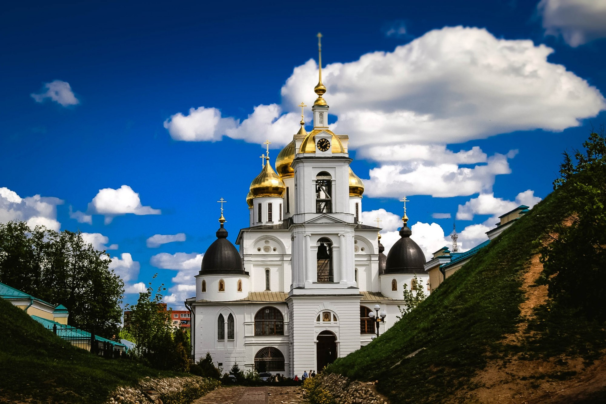

Дмитров
Дмитров – город, начавший свое существование с небольшой и поныне частично сохранившейся крепости, заложенной Юрием Долгоруким в 12 в. С тех пор пережил немало исторических событий, включая победную страницу истории об операции «Тайфун», остановившую немцев на подходе к Москве. Впрочем, сейчас городок знаменит, прежде всего, многочисленными горнолыжными базами, разбросанными в его окрестностях.

Дмитровский кремль — главная достопримечательность города Дмитрова, имеющая славу одного из самых древних и любопытнейших памятников оборонной архитектуры этой исторической территории. Основанный как порубежная крепость ростово-суздальским князем Юрием Долгоруким в 1154 году, кремль веками служил северо-западным форпостом изначально Ростово-Суздальской земли, позже – Переяславского княжества и, в конце концов, – всей Московской Руси.
Усадьба Толчёновых оформилась в период 1770-1780-х годов, когда принадлежала А.И. и И.А. Толчёновым – крупным хлеботорговцам. Так в 1785-1788 года на средства И.А. Толченова возводится главный усадебный дом – кирпичный, отделанный белокаменным и лепным декором, с претензией на столичный стиль. Очень вероятно, что автором проекта был Н.П. Осипов – деловой партнёр И.А. Толченова.
В 1967 году по решению Главы Дмитровского района Валерия Гаврилова театральный коллектив был учрежден как Муниципальный драматический театр «Большое гнездо». Свое имя театр связал с историей родного края. В 1154 году ростово-суздальский князь Юрий Долгорукий назвал город в честь родившегося сына Дмитрия, вошедшего в историю Руси под именем Всеволод «Большое гнездо».